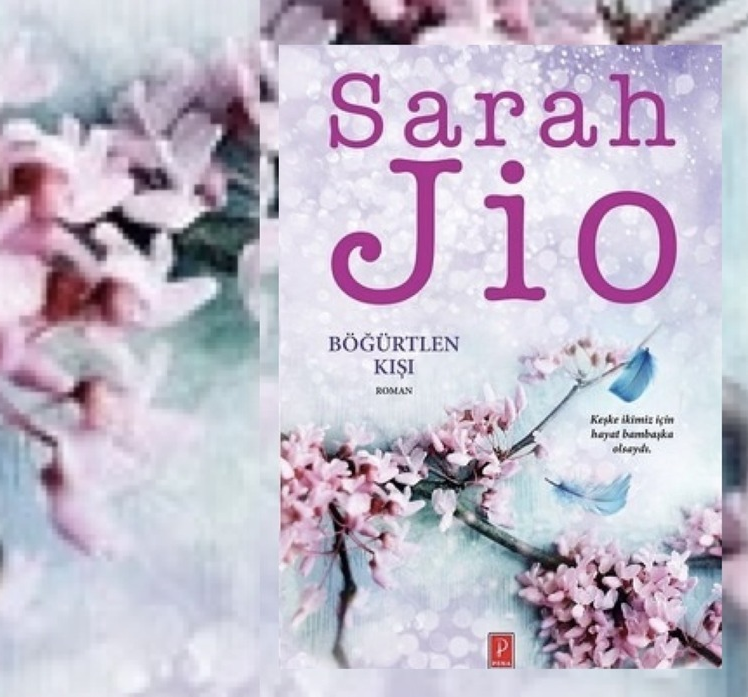

Kitabın Konusu
Claire hala bebeğini kaybetmesinin acısını yaşamaya devam ederken, içinde bulundukları Mayıs 2013 tarihinde hiç beklenmedik bir şekilde kar yağışı görülüyor. “Böğürtlen kışı” olarak adlandırılan bu mevsimsel durumun, yaşadıkları bölgede en son 80 yıl önce görülmesi ise dikkat çekici bir gündem yaratıyor.
Kitap Hakkında Yorumlarım
Claire, hamileliği esnasında bebeğini kaybedince işe ve hayata olan motivasyonunu da yitiriyor. Mutluluğuna gölge düşen çiftin evliliği her ne kadar sarsılmışsa da, Claire açısından toparlanmanın tek yolu çalışmaya devam etmekten geçiyor. Gazeteci olan Claire patronunun ona verdiği iş, hayatını tamamen değiştirerek onu daha önce bilmediği gerçeklerle yüzleştirmiştir. İlk okuduğum roman olmakla beraber hala düşündükçe tüylerimi diken diken eden bir roman özellikle de sonu... Herkesin okumasını istediğim harika bir kitap.
Alıntılarım
Onu özlüyor olmaktan nefret ediyordum.
Bazen yüreğim patlayacakmış gibi hissediyorum.